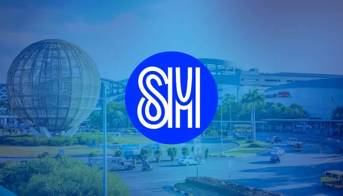
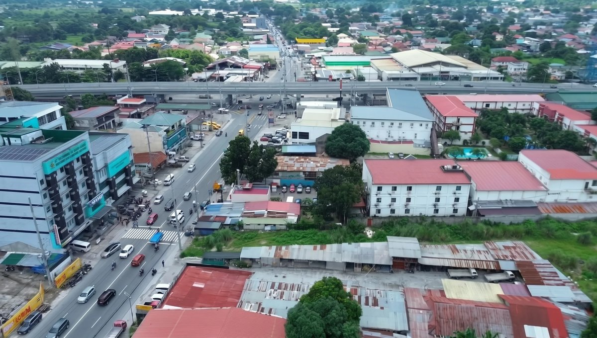
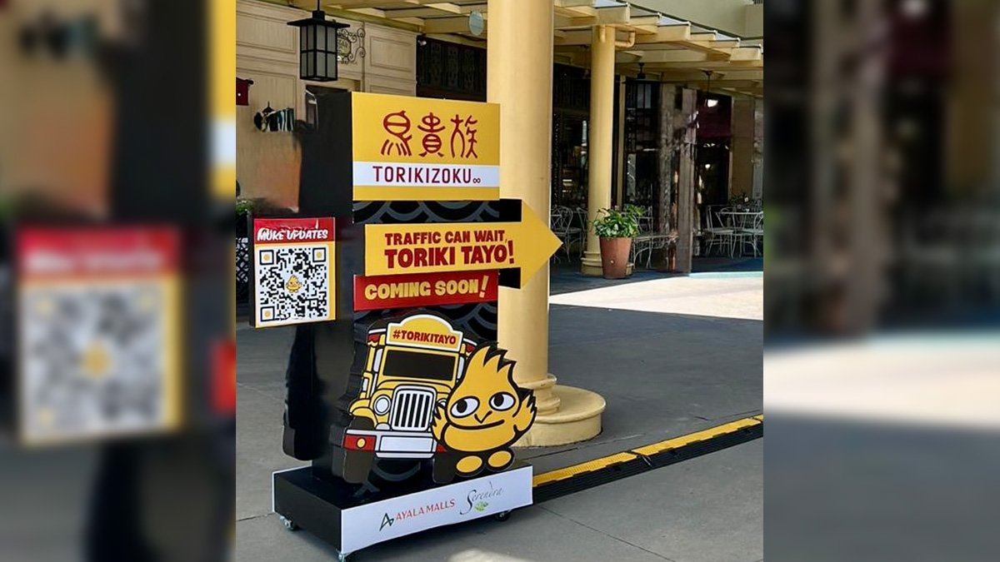

SM denies Landers talks — membership retail stays the prize
1–2 Oct 2026
Bilyonaryo / PSE filing, with Philstar stock commentary from AB Capital: SM Investments Corp. told the exchange it “cannot confirm” an Inquirer Biz Buzz report and specifically that it is “not currently in any discussions or negotiations with Landers and its shareholders.” The buzz had CVC Capital Partners exiting a 2021 convertible-bond stake in Southeast Asia Retail Inc. (Landers operator), framed as ~49% economic interest and nearly US$200 million including interest, with SM as a possible buyer alongside founder Lowell Yu’s platform. AB Capital’s read: neutral for SM; the denial removes an immediate competitive overhang for Puregold and S&R that would have paired SM’s property, sourcing, logistics, and customer stack with Landers’ membership lane. No change to SM or PGOLD forecasts. The useful residue is strategic, not transactional — membership retail is still one of the few grocery formats where SM has limited direct exposure, and an established Landers platform would have meant instant access to premium shoppers, imports, and bulk. Operator read for Calamba: do not trade the rumor. Do watch who eventually takes CVC’s paper. If a strategic buyer other than SM shows up, warehouse-club density accelerates; if CVC holds, S&R keeps running the membership race alone under Puregold. Either way, the format thesis (membership fee + import/frozen depth + food-court attach) is what your competitors are still building — see S&R Angeles next.
Open Bilyonaryo / SM · Open Philstar / AB Capital

S&R Angeles opens Oct 22 — third Pampanga membership box
22 Oct 2026 (reported ~2 days ago)
Homes.ph: S&R Membership Shopping’s first Angeles City warehouse is set for Oct 22 in Barangay Cutcut, directly in front of St. Catherine Hospital — the company’s third warehouse in Pampanga. The pitch is the usual S&R stack: premium imports, American-label appliances, high-quality frozen, source-verified meats, plus the food court (New York–style pizza, oversized churros, chicken baked rolls). Location read from the desk: high-traffic Cutcut corridor, tourist + local catchment, expansive parking. FLAG: this is tourism/retail promo coverage, not a Puregold IR filing — treat merchandising claims as brand copy until you walk the floor. Operator read: same week SM denies buying Landers, Puregold’s S&R keeps planting membership boxes in Central Luzon. That is the competitive fact. For a Calamba opener, Angeles rent is irrelevant; the model is not. Membership fee + bulk/import depth + a high-margin food-court attach is how warehouse clubs monetize trips that grocery alone cannot. If you densify a Laguna lunch or commissary lane near Nuvali/SM Sto. Tomas gravity, watch whether S&R’s food-court ticket and meat/frozen mix set a reference for what mid-affluent households will pay when rice is still +19% YoY. Also mark the calendar: Oct 22 is two weeks after Agrilink — if you need import/frozen dual-source ideas, the Angeles door is a live case study, not a brochure.
Open Homes.ph / S&R Angeles

Torikizoku lands Serendra Oct 12 — Japan’s #1 yakitori tests BGC
12 Oct 2026
Digital Filipina / Simpol / Torikizoku PH: Torikizoku opens its first Philippine restaurant Oct 12 at The Shops at Serendra, Bonifacio Global City. Brand origin: Osaka, 1985; more than 600 stores across Japan, now expanding as a “Global YAKITORI Family.” Format is yakitori-ya — freshly grilled chicken skewers, selected ingredients, lively gather table. Pre-opening activation: yellow Torikki mascot installs around Serendra with QR codes for the PH site, updates, and reservations; local tagline “Toriki Tayo.” FLAG: this is launch/PR desk — treat authenticity and scale claims as brand copy until covers turn. Operator read for Calamba: you are not leasing Serendra. You are watching whether Japan’s volume yakitori chain can hold BGC ticket and throughput on skewers-and-beer energy while PH food inflation is sticky. If the door works, expect a franchise/area-dev conversation for other premium malls; if it stalls, it joins the pile of foreign F&B that mistook BGC footfall for a national template. Steal the diligence questions — protein cost under soft-but-reversible pork, labor on grill stations, reservation vs walk-in mix, alcohol attach — then apply them to any Laguna/Cavite izakaya or grilled-protein pitch. Oct 12 sits between Agrilink (8–10) and Franchise Negosyo Iloilo (9–10): clear Thu–Sat for sourcing, then glance at Serendra coverage the following Monday for whether the format sticks.
Open Digital Filipina · Open Torikizoku PH